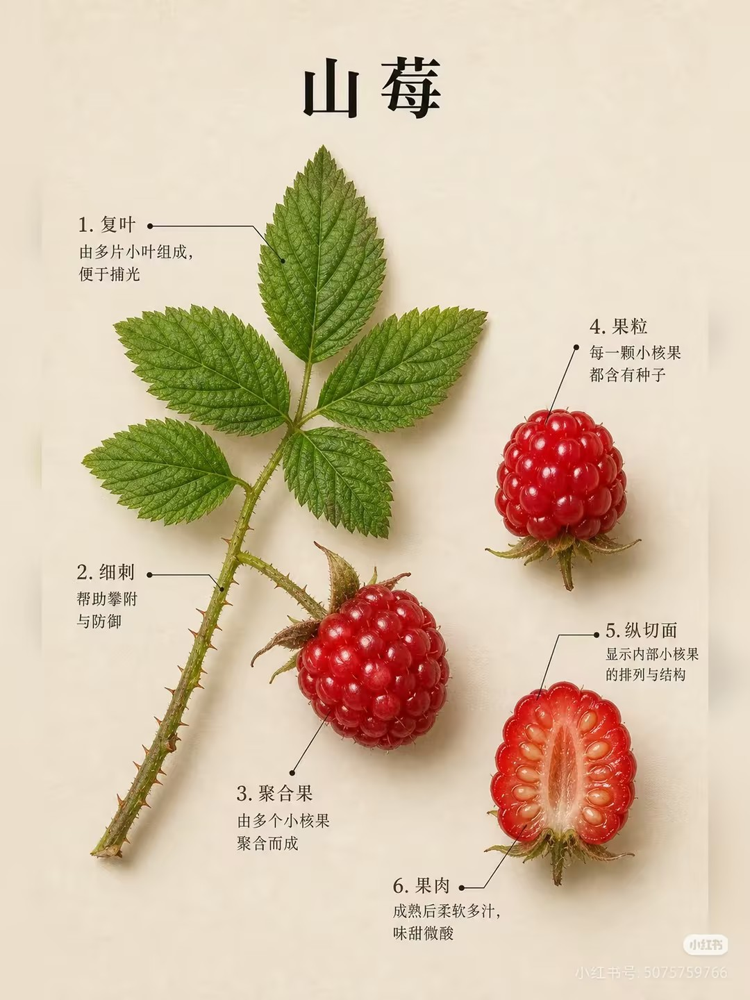
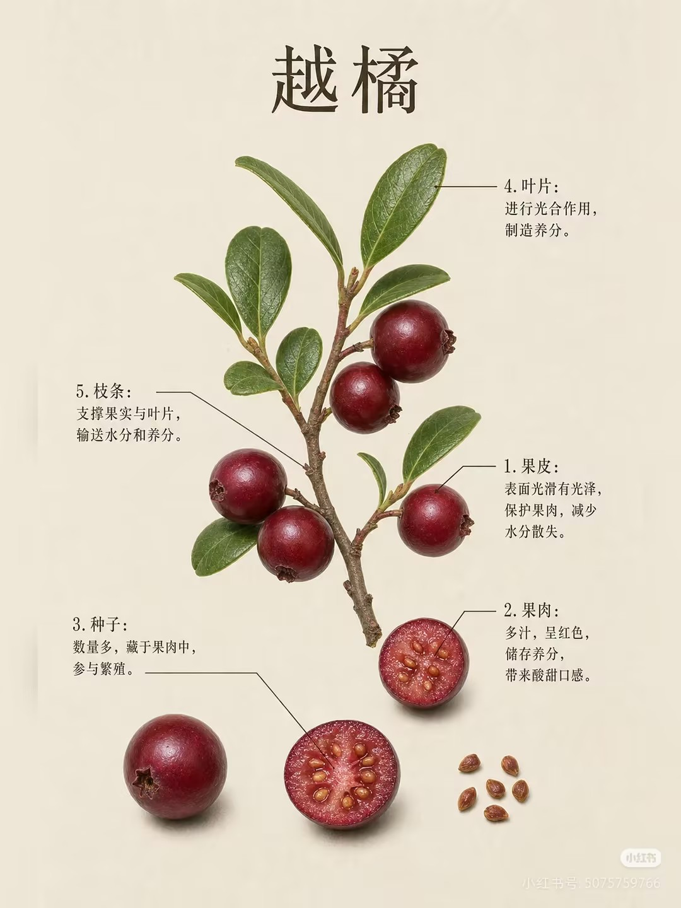
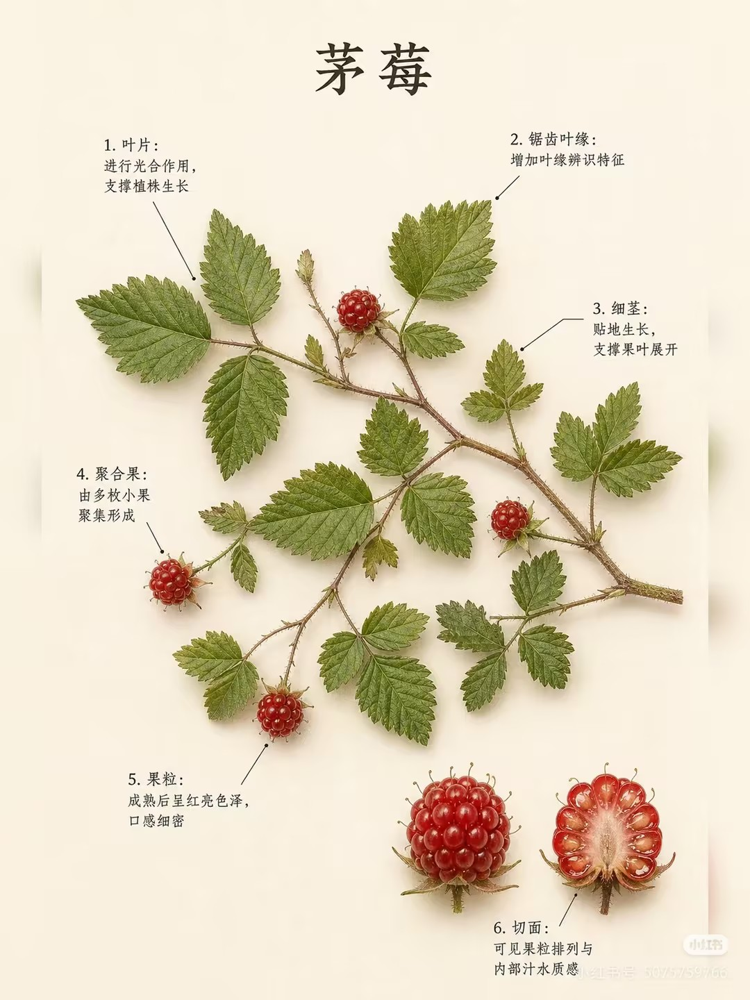
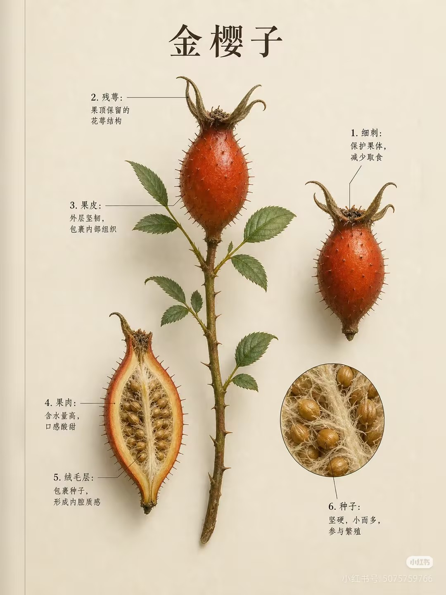
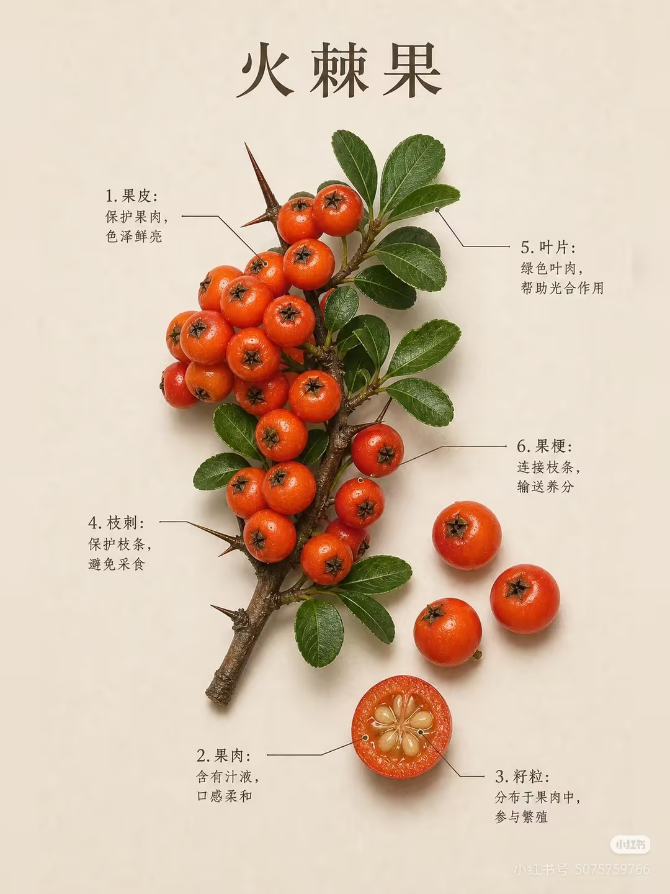
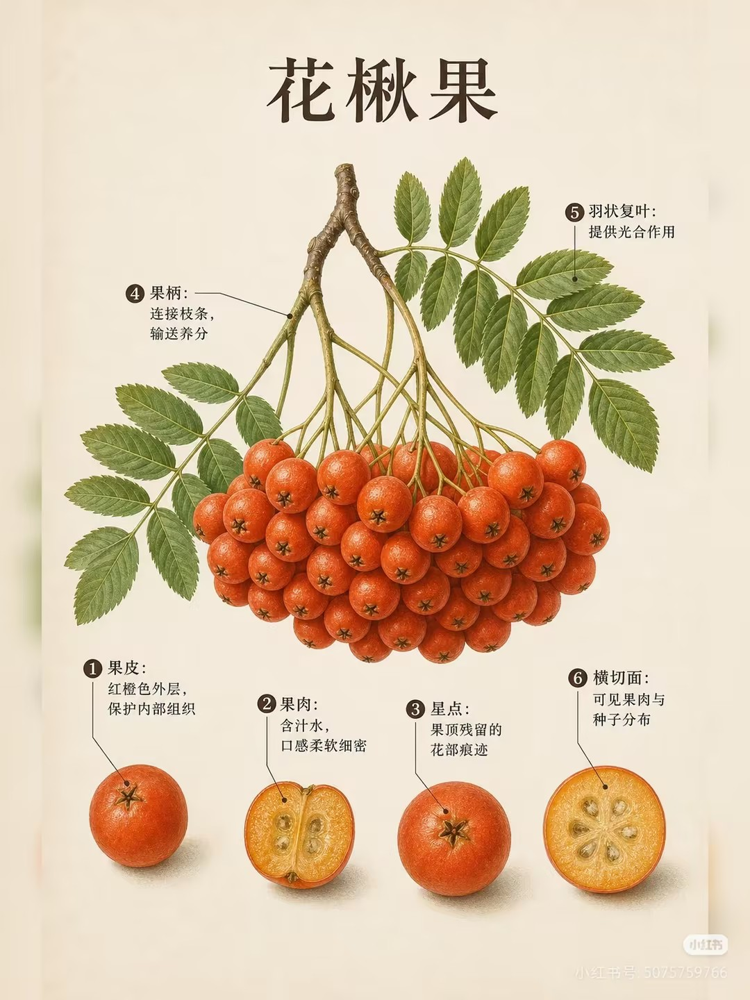
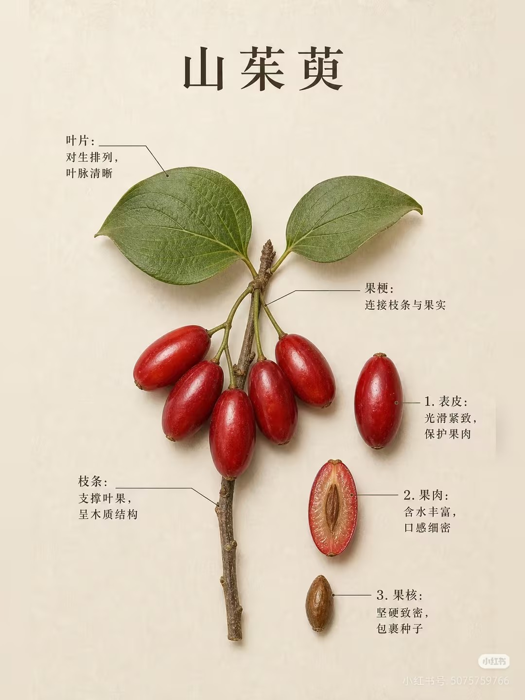
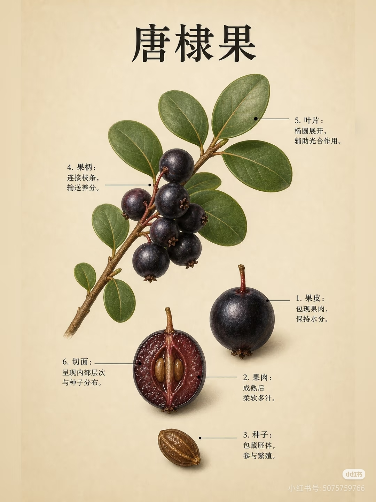
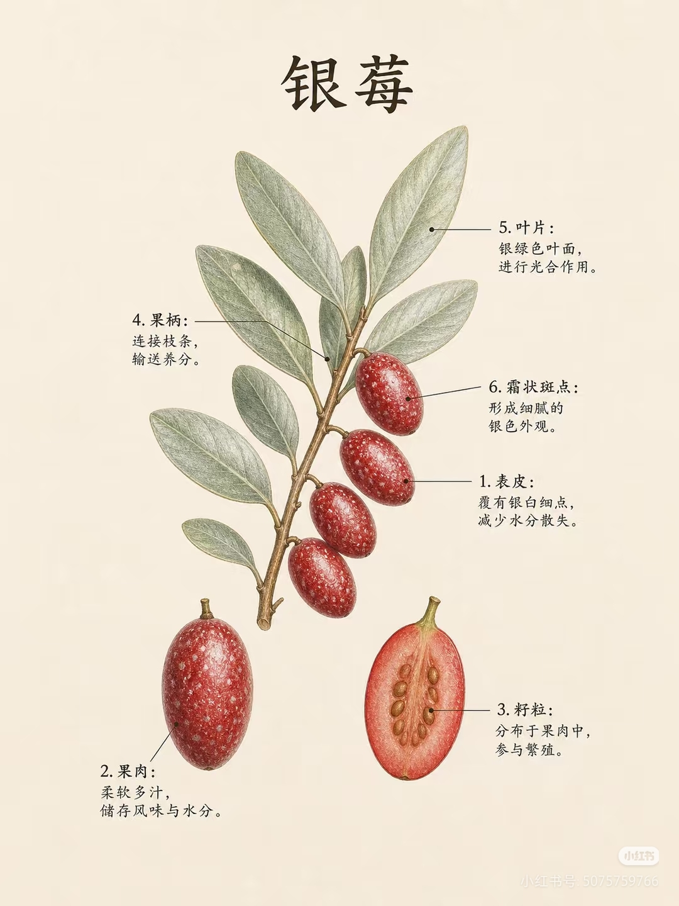
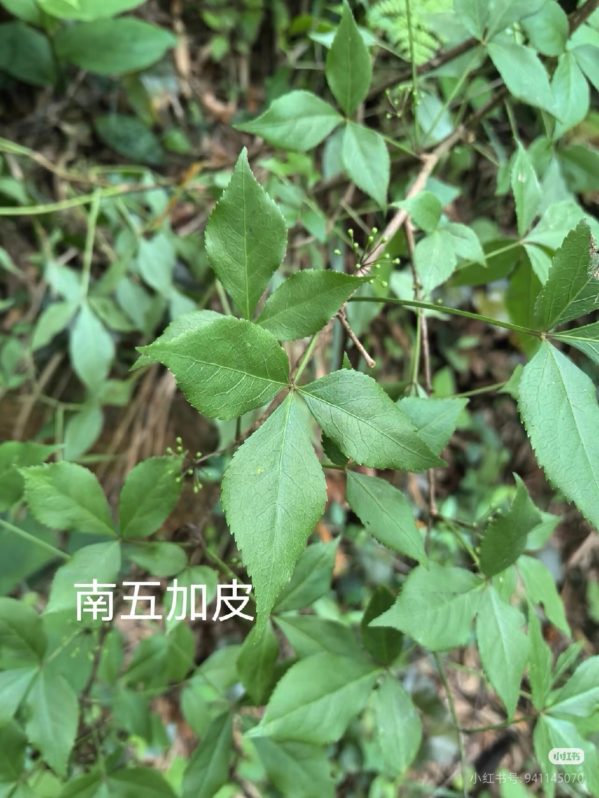

WILD PLANTS · FIELD NOTES
山野植物
手册
沿着林间小径，认识叶片的脉络、果实的颜色，以及那些容易被忽略的生命细节。

01 — FIELD INDEX
林间图鉴
从一片叶子，认出一座山的季节。

越橘
PLATE / 02
茅莓
PLATE / 03
金樱子
PLATE / 04
火棘果
PLATE / 05
花椒果
PLATE / 06
山茱萸
PLATE / 07
唐棣果
PLATE / 08
银莓
PLATE / 09